San Francisco Travel Guide
Cultural, commercial, and financial center in Northern California and a popular tourist destination, known for its cool summers, fog, steep rolling hills, eclectic mix of architecture, and landmarks, including the Golden Gate Bridge
Places to See in San Francisco
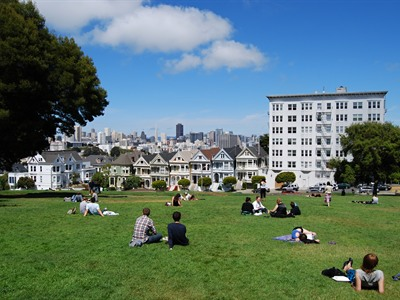
Pavel Špindler, CC BY 3.0, via Wikimedia Commons; Image Size Adjusted
.jpg){kind=link}
Alamo Square Park
Iconic hilltop park known for its sweeping city views, historic Victorian homes, and one of the most photographed urban landscapes in the United States.

Chris6d, CC BY-SA 4.0, via Wikimedia Commons; Image Size Adjusted

Alcatraz Island
Maximum security federal prison on Alcatraz Island, 1.25 miles (2.01 km) off the coast of San Francisco, California. Today, Alcatraz is a public museum and one of San Francisco's major tourist attractions
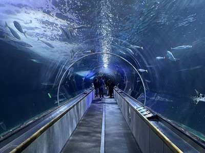
Antony-22, CC BY-SA 4.0, via Wikimedia Commons; Image Size Adjusted

Aquarium of the Bay
Aquarium showcasing the marine life and ecosystems of San Francisco Bay through immersive exhibits, underwater tunnels, and close encounters with native aquatic species.
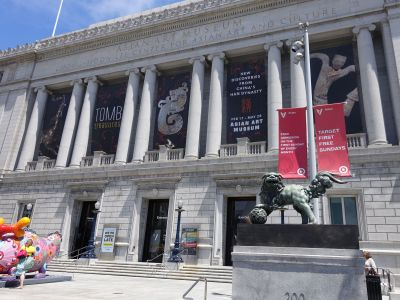
Joyofmuseums, CC BY-SA 4.0, via Wikimedia Commons; Image Size Adjusted

Asian Art Museum
Renowned museum housing one of the largest collections of Asian art in the world, featuring thousands of years of artistic, cultural, and historical treasures from across Asia.
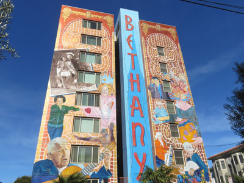
Fabrice Florin, CC BY-SA 2.0, via Wikimedia Commons; Image Size Adjusted

Balmy Alley
One-block-long alley that is home to the most concentrated collection of murals in the city of San Francisco
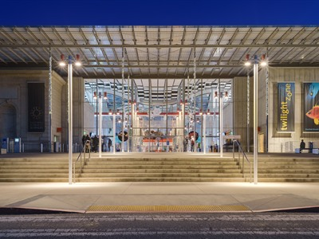
King of Hearts, CC BY-SA 4.0, via Wikimedia Commons; Image Size Adjusted

California Academy of Sciences
Innovative natural history museum featuring a world-class aquarium, planetarium, living rainforest, and cutting-edge exhibits focused on science, biodiversity, and conservation.

Christian Mehlführer, User:Chmehl, CC BY 3.0, via Wikimedia Commons; Image Size Adjusted

Chinatown
The oldest Chinatown in North America and the largest Chinese enclave outside Asia
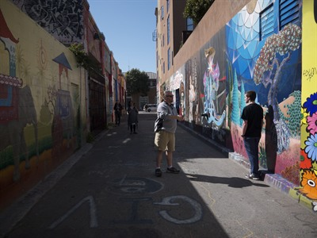
davitydave, CC BY 2.0, via Flickr; Image Size Adjusted
Clarion Alley
Vibrant outdoor gallery featuring ever-changing murals, graffiti art, and community-driven public artworks that showcase contemporary urban creativity and social expression.
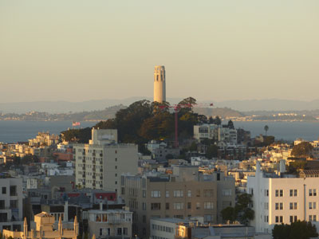
Stilfehler, CC BY-SA 4.0, via Wikimedia Commons; Image Size Adjusted

Coit Tower
210-foot (64 m) tower in the Telegraph Hill neighborhood of San Francisco, offering panoramic views over the city and the bay
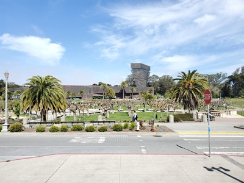
Buzzlovestravel, CC BY-SA 4.0, via Wikimedia Commons; Image Size Adjusted

de Young Museum
Fine arts museum featuring an internationally significant collection of American and global artworks spanning centuries of creative achievement and cultural expression.
Bob Collowan, CC BY-SA 4.0, via Wikimedia Commons; Image Size Adjusted

Embarcadero
Scenic waterfront boulevard lined with promenades, parks, public art, piers, and sweeping views of San Francisco Bay and the city skyline.
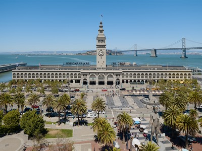
Daniel Lu (User:dllu), CC BY-SA 4.0, via Wikimedia Commons; Image Size Adjusted

Ferry Building
Historic waterfront marketplace featuring local food vendors, artisan shops, restaurants, and scenic bay views in a landmark terminal building.
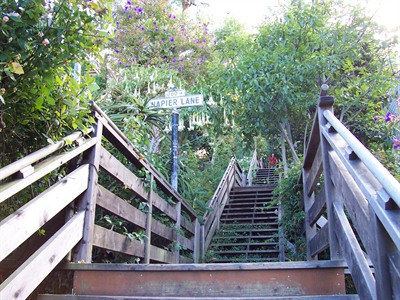
Christopher Beland, Public domain, via Wikimedia Commons; Image Size Adjusted

Filbert Street Stairs
Historic pedestrian stairway climbing a steep hillside through landscaped gardens while offering sweeping views of the bay, waterfront, and city skyline.
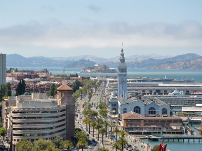
Bob Collowan, CC BY-SA 4.0, via Wikimedia Commons; Image Size Adjusted
Fisherman's Wharf
Neighborhood and popular tourist attraction in San Francisco that roughly encompasses the northern waterfront area of San Francisco from Ghirardelli Square or Van Ness Avenue east to Pier 35 or Kearny Street
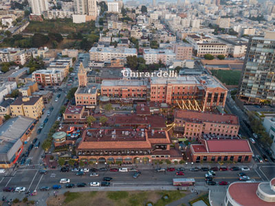
CucombreLibre, CC BY 2.0, via Wikimedia Commons; Image Size Adjusted
.jpg){kind=link}
Ghirardelli Square
Landmark public square with shops and restaurants and a 5-star hotel in the Marina area of San Francisco

Christian Mehlführer, User:Chmehl, CC BY 3.0, via Wikimedia Commons; Image Size Adjusted

Golden Gate Bridge
Suspension bridge spanning the Golden Gate, the one-mile-wide (1.6 km) strait connecting San Francisco Bay and the Pacific Ocean is one of the most internationally recognized symbols of San Francisco and California
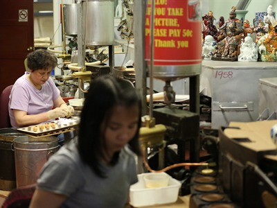
Tobias Kleinlercher / Wikipedia, CC BY-SA 3.0, via Wikimedia Commons; Image Size Adjusted
.JPG){kind=link}
Golden Gate Fortune Cookie Factory
Historic family-owned confectionery producing hand-folded fortune cookies while offering visitors a behind-the-scenes look at a unique culinary tradition.

Tarwin Stroh-Spijer, CC BY-SA 4.0, via Wikimedia Commons; Image Size Adjusted

Golden Gate National Recreation Area
National Recreation Area protecting ecologically and historically significant landscapes surrounding the San Francisco Bay Area and is one of the largest urban parks in the world
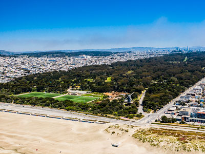
Taras Bobrovytsky, CC0, via Wikimedia Commons; Image Size Adjusted

Golden Gate Park
Large urban park of public grounds 20 percent larger than Central Park in New York City, is the third most-visited city park in the United States after Central Park and the Lincoln Memorial
Gregangelo Museum
Whimsical immersive attraction blending theatrical sets, fantastical environments, and interactive storytelling into a one-of-a-kind artistic experience.
Mike McBey, CC BY 2.0, via Wikimedia Commons; Image Size Adjusted
.jpg){kind=link}
Haight-Ashbury
Neighborhood is known as one of the main centers of the hippie and counterculture of the 1960s
Japanese Tea Garden
Five-acre landscaped garden featuring traditional Japanese architecture, koi ponds, stone lanterns, and seasonal cherry blossoms.
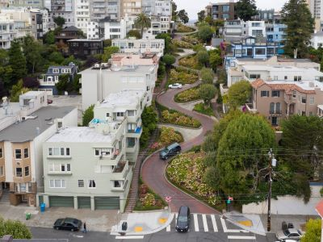
Christopher Michel, CC BY-SA 4.0, via Wikimedia Commons; Image Size Adjusted

Lombard Street
East-west street in San Francisco that is famous for a steep, one-block section with eight hairpin turns.
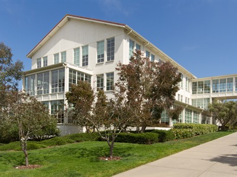
Frank Schulenburg, CC BY-SA 4.0, via Wikimedia Commons; Image Size Adjusted

Lucasfilm
Campus destination featuring film memorabilia, public art, landscaped grounds, and exhibits celebrating the creativity and innovation behind some of the world's most influential films.
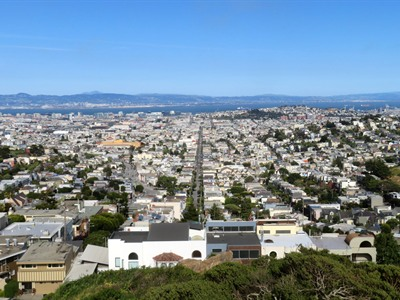
Pi.1415926535, CC BY-SA 3.0, via Wikimedia Commons; Image Size Adjusted

Mission District
Historic San Francisco neighborhood renowned for its colorful murals, diverse cultural heritage, acclaimed dining scene, and vibrant community atmosphere.
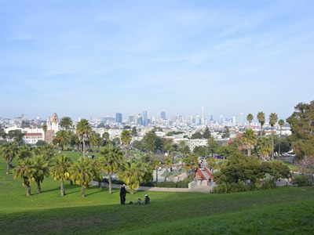
4300streetcar, CC BY 4.0, via Wikimedia Commons; Image Size Adjusted

Mission Dolores Park
Popular hilltop city park featuring expansive lawns, tennis courts, playgrounds, and panoramic views of the San Francisco skyline and surrounding neighborhoods.
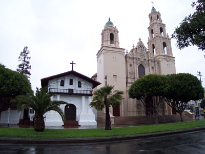
Photograph by Robert A. Estremo, CC BY-SA 2.0, via Wikimedia Commons; Image Size Adjusted

Mission San Francisco de Asis
Mission commonly known as Mission Dolores, is a Spanish Californian mission and the oldest surviving structure in San Francisco, located in the Mission District
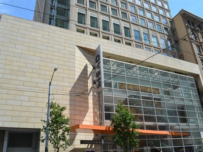
Minette Lontsie, CC BY-SA 4.0, via Wikimedia Commons; Image Size Adjusted

Museum of the African Diaspora
Contemporary cultural museum exploring the global history, art, and impact of the African diaspora through innovative exhibitions, storytelling, and community engagement.
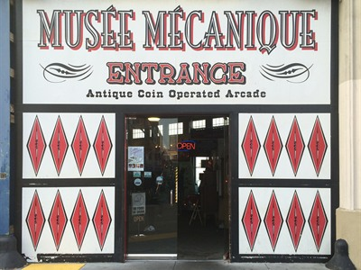
Rhododendrites, CC BY-SA 4.0, via Wikimedia Commons; Image Size Adjusted

Musée Mécanique
Vintage arcade attraction featuring hundreds of antique coin-operated machines, mechanical amusements, and interactive exhibits that celebrate the history of entertainment technology.
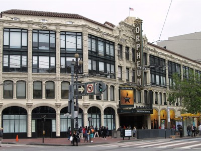
Beyond My Ken, CC BY-SA 4.0, via Wikimedia Commons; Image Size Adjusted

Orpheum Theatre
Historic performing arts venue presenting Broadway productions, concerts, and theatrical performances within an ornate early twentieth-century theater setting.

Painted Ladies
Best-known group of Victorian and Edwardian houses and buildings repainted, in three or more colors that embellish or enhance their architectural details across from Alamo Square park
-400.jpg)
Rhododendrites, CC BY-SA 4.0, via Wikimedia Commons; Image Size Adjusted
.jpg){kind=link}
Palace of Fine Arts
Monumental structure originally constructed for the 1915 Panama-Pacific Exposition including the most prominent building of the complex, a 162 feet high open rotunda, is enclosed by a lagoon on one side, and is neighboring a large, curved exhibition center on the other
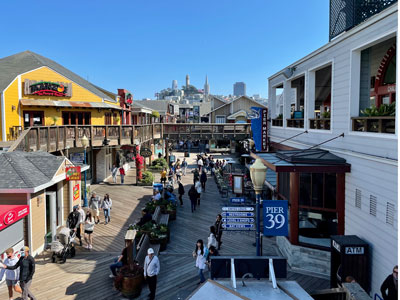
Chris6d, CC BY-SA 4.0, via Wikimedia Commons; Image Size Adjusted

Pier 39
Shopping center and popular tourist attraction built on a pier in San Francisco including shops, restaurants, a video arcade, street performances, the Aquarium of the Bay, virtual 3D rides, and views of California sea lions on docks on Pier 39's marina
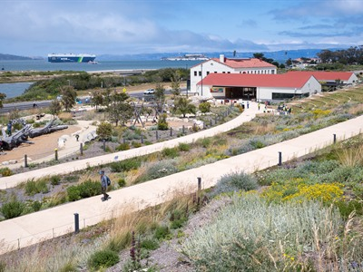
Frank Schulenburg, CC BY-SA 4.0, via Wikimedia Commons; Image Size Adjusted
-L1003404.jpg){kind=link}
Presidio Tunnel Tops
Innovative waterfront park built atop highway tunnels, featuring landscaped overlooks, walking paths, public art, and spectacular views of San Francisco Bay and the Golden Gate Bridge.

San Francisco Botanical Garden
Living museum featuring thousands of plant species from around the world across beautifully curated gardens, collections, and natural landscapes.

San Francisco Cable Car Museum
Interactive exhibits and historic machinery illustrate the inner workings and legacy of a unique transportation system that shaped urban mobility.
,_Mason_Street,_Cable-Car-Haltestelle_--_2022_--_2947-400.jpg)
Dietmar Rabich, CC BY-SA 4.0, via Wikimedia Commons; Image Size Adjusted
,_Mason_Street,_Cable-Car-Haltestelle_--_2022_--_2947.jpg){kind=link}
San Francisco Cable Car System
World's last manually operated cable car system and an icon of San Francisco, the cable car system forms part of the city's intermodal urban transport network
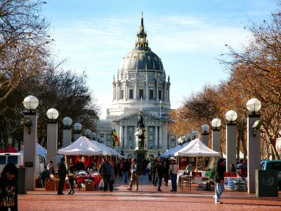
Torbjorn Toby Jorgensen, CC BY-SA 2.0, via Wikimedia Commons; Image Size Adjusted

San Francisco City Hall
Grand Beaux-Arts civic building featuring a massive domed rotunda, marble interiors, and ornate architecture that serves as a functioning government center and historic landmark.
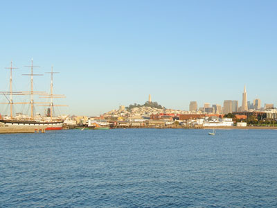
Adbar, CC BY-SA 3.0, via Wikimedia Commons; Image Size Adjusted

San Francisco Maritime National Historical Park
Fleet of historic vessels, a visitor center, a maritime museum, and a library/research facility
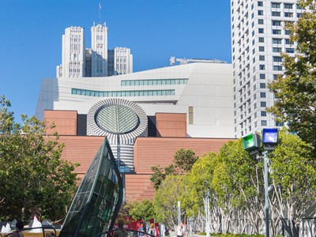
Supercarwaar, CC BY-SA 4.0, via Wikimedia Commons; Image Size Adjusted

San Francisco Museum of Modern Art
Leading contemporary art museum featuring an extensive collection of modern and contemporary masterpieces, innovative exhibitions, and immersive artistic experiences.
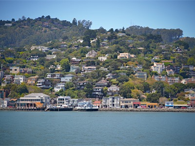
James MacIndoe, CC BY 2.0, via Flickr; Image Size Adjusted
Sausalito
Charming waterfront community known for its artistic heritage, picturesque harbor, hillside homes, boutique shopping, and spectacular views of San Francisco Bay.
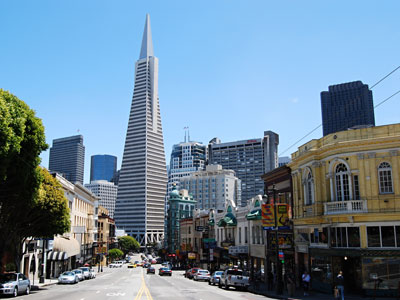
Pavel Špindler, CC BY 3.0, via Wikimedia Commons; Image Size Adjusted

Transamerica Pyramid
Iconic triangular skyscraper featuring exhibitions, public art, and a redwood park integrated into a revitalized urban space.
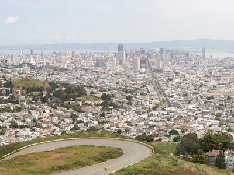
Daniel Schwen, CC BY-SA 4.0, via Wikimedia Commons; Image Size Adjusted

Twin Peaks
Two prominent hills with an elevation of about 925 feet (282 m) located near the geographic center of San Francisco
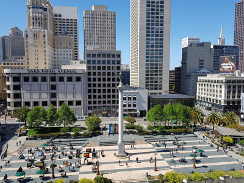
Lordsamp, CC BY-SA 4.0, via Wikimedia Commons; Image Size Adjusted

Union Square
One-block plaza and surrounding area is one of the largest collections of department stores, upscale boutiques, gift shops, art galleries, and beauty salons in the United States, making it a major tourist destination and a vital, cosmopolitan gathering place in downtown San Francisco
_-_San_Francisco,_CA_-_DSC03017.JPG){kind=link}
USS Pampanito Museum and Memorial
Historic World War II submarine museum offering visitors the opportunity to explore a preserved naval vessel and learn about the experiences of Pacific theater submariners.
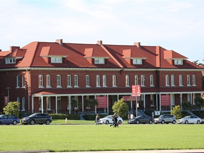
Tobias Kleinlercher / Wikipedia, CC BY-SA 3.0, via Wikimedia Commons; Image Size Adjusted
.JPG){kind=link}
Walt Disney Family Museum
Interactive museum celebrating the life, imagination, and creative legacy of Walt Disney through original artwork, artifacts, films, and personal memorabilia.
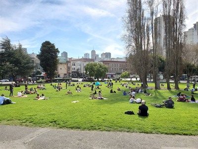
Buzzlovestravel, CC BY-SA 4.0, via Wikimedia Commons; Image Size Adjusted

Washington Square
Historic neighborhood park featuring open lawns, mature trees, community gathering spaces, and picturesque views of one of San Francisco's most iconic urban districts.
Overview
San Francisco is one of America’s most beloved cities, a compact, hilly peninsula city at the tip of the San Francisco Peninsula, surrounded on three sides by the Pacific Ocean, the Golden Gate strait and San Francisco Bay. The city covers only about 47 square miles, with roughly 800,000 residents, and it anchors a Bay Area of nearly eight million people. It is known worldwide for the Golden Gate Bridge, cable cars, Alcatraz, the colorful Victorian “Painted Ladies,” crooked Lombard Street, Fisherman’s Wharf, Chinatown and diverse neighborhoods such as the Mission District, North Beach and Haight-Ashbury. It is also a global center of technology, finance, biotechnology and culture, the birthplace of the 1960s counterculture and a leader in the LGBTQ rights movement, and it has one of the best food and wine scenes in the country.
Visitors come for the views, the walkable neighborhoods and the mix of nature and city: you can ride a cable car in the morning, hike the headlands or walk across a world-famous bridge in the afternoon and dine at a Michelin-starred restaurant at night. The city is also the gateway to Northern California’s Wine Country, redwoods and coast. Its reputation for tolerance, innovation and creativity continues to attract travelers, and its cool, fresh climate offers a break from summer heat elsewhere.
History. The peninsula was home to the Ohlone people for thousands of years before the Spanish established a presidio and Mission San Francisco de Asís (Mission Dolores) in 1776. The settlement, then called Yerba Buena, became part of Mexico in 1821 and was taken by the United States in 1846, and it was renamed San Francisco in 1847. The 1849 Gold Rush turned a small hamlet of about 1,000 people into a boomtown of tens of thousands within two years, making it the West Coast’s largest city. The April 18, 1906 earthquake and the fires that followed destroyed about 80% of the city and killed an estimated 3,000 people, but the city was rebuilt in time to host the 1915 Panama-Pacific International Exposition, whose legacy includes the Palace of Fine Arts. The Bay Bridge opened in 1936 and the Golden Gate Bridge in 1937. The United Nations Charter was signed here in 1945, the city became a center of the Beat movement in the 1950s and the Haight-Ashbury counterculture and 1967 Summer of Love in the 1960s, and since the 1990s it has been shaped by the technology boom of nearby Silicon Valley.
Fisherman’s Wharf. Fisherman’s Wharf on the northern waterfront is the city’s most visited tourist area, a former fishing port that now offers seafood stands, sourdough bread bowls, street performers and shops. Pier 39 is famous for the sea lions that have lounged on its docks since 1989, and nearby are the Aquarium of the Bay, the Musée Mécanique antique arcade, Ghirardelli Square, the San Francisco Maritime National Historical Park with historic ships on Hyde Street Pier and the World War II submarine USS Pampanito. Ferries to Alcatraz Island leave from Pier 33, and the Powell-Hyde and Powell-Mason cable car lines end nearby. The area is busy, especially in summer, and is best visited early in the day.
Golden Gate National Recreation Area: Marin Headlands. Across the Golden Gate Bridge, the Marin Headlands are part of the Golden Gate National Recreation Area (GGNRA), a national park site of about 82,000 acres created in 1972 and one of the most visited in the country. The headlands offer spectacular views of the bridge and the skyline from Battery Spencer, plus the Point Bonita Lighthouse, Rodeo Beach, Kirby Cove, Hawk Hill, where thousands of raptors migrate each fall, Tennessee Valley and old military batteries, and historic forts including Fort Cronkhite, Fort Barry and Fort Baker. Farther north are Muir Woods National Monument, with its ancient coast redwoods, and Stinson Beach. The nearby town of Sausalito is a popular stop.
Golden Gate National Recreation Area: San Francisco. On the city side, the San Francisco area of the GGNRA protects much of the city’s northern and western edge. It includes the Presidio, a former military post turned park, with the Presidio Tunnel Tops; Crissy Field, a restored tidal marsh and beach with views of the bridge; Fort Point, a Civil War-era fort under the bridge; Baker Beach; Lands End and the ruins of Sutro Baths; Ocean Beach; Fort Mason; and Alcatraz Island, which is also managed by the National Park Service. Miles of coastal trails connect these sites, and many have free admission.
Golden Gate Bridge. The Golden Gate Bridge, which opened on May 27, 1937, is the symbol of San Francisco and one of the most photographed structures in the world. The suspension bridge is 1.7 miles long and its two 746-foot towers are painted a distinctive color known as International Orange. At the time it was completed it had the longest main span in the world. Visitors can walk or bike across it on the pedestrian paths, which are open during daylight hours, and the best views are from Battery Spencer, Fort Point, Crissy Field and the visitor center and plaza on the south end. Vehicles pay a toll only when traveling southbound into the city, and fog often covers the towers, especially in summer, so go early or check the weather.
Chinatown. San Francisco’s Chinatown, established in the 1840s, is the oldest Chinatown in North America and one of the largest Chinese communities outside Asia. Enter through the Dragon Gate at Grant Avenue and Bush Street and wander Grant Avenue’s shops and Stockton Street’s markets, where residents buy produce, fish and herbs. Tour the temples and alleys, including Waverly Place, visit the Golden Gate Fortune Cookie Factory and eat dim sum, roast duck and noodles. The Chinese New Year Festival and Parade, one of the largest in the country, takes place each winter.
Weather. San Francisco has a mild Mediterranean climate with cool summers and little temperature variation through the year; daytime highs are usually in the 60s °F, and snow is practically unknown. Summers (June to August) are the foggiest and often the coolest, with heavy fog in the morning and evening, so bring layers. The warmest weather arrives in September and October, which are often sunny and the best months to visit. Winter and early spring bring most of the roughly 23 inches of annual rain, and microclimates mean the sunny Mission District can be 15 degrees warmer than the Sunset District or Ocean Beach. Wind is common near the water, and wildfire smoke from the surrounding region can occasionally affect air quality in late summer and fall.
Sightseeing and Popular Landmarks. Top sights include Alcatraz Island, the former federal prison; the cable cars, the world’s last manually operated cable car system; Lombard Street; the Painted Ladies at Alamo Square Park; Coit Tower and the Filbert Street Steps; the Ferry Building and the Embarcadero; Twin Peaks; the Transamerica Pyramid; the Palace of Fine Arts; Union Square; City Hall; and the Mission District murals of Balmy Alley and Clarion Alley. Haight-Ashbury keeps the spirit of the 1960s, and the Lucasfilm campus in the Presidio has a Yoda fountain.
Culture and Museums. San Francisco is rich in arts and culture. Golden Gate Park holds the de Young Museum and the California Academy of Sciences, a combined aquarium, planetarium, rainforest and natural history museum. The San Francisco Museum of Modern Art (SFMOMA) is one of the largest modern art museums in the country, and the Asian Art Museum holds one of the finest collections of Asian art in the West. Others include the Walt Disney Family Museum, the Museum of the African Diaspora, the Cable Car Museum, the Exploratorium and the Legion of Honor. The San Francisco Opera, Symphony and Ballet, the Orpheum Theater and a lively live-music and comedy scene round out the offerings.
Parks. The city has more than 220 parks. Golden Gate Park, over 1,000 acres and larger than New York’s Central Park, stretches from the Haight to the Pacific and includes the Japanese Tea Garden, the Conservatory of Flowers, the San Francisco Botanical Garden, lakes, meadows and a herd of bison. Mission Dolores Park and Washington Square are neighborhood hangouts, Twin Peaks has panoramic views, and the Presidio, Lands End and Crissy Field offer hiking and coastline.
Cuisine. San Francisco is one of the best food cities in the country, and the Bay Area is one of the top Michelin regions in the United States, with three-star restaurants such as Benu, Atelier Crenn and Quince in the city, and Wine Country restaurants like The French Laundry nearby. The city is famous for Boudin sourdough bread, Dungeness crab, cioppino, the Mission-style burrito, Irish coffee at the Buena Vista, the Ghirardelli chocolate sundae and Green Goddess dressing, and the fortune cookie was popularized here. International food is exceptional, from dim sum in Chinatown and the Richmond, to Italian in North Beach, Mexican in the Mission, Japanese in Japantown, Burmese, Vietnamese, Ethiopian, Salvadoran and Peruvian restaurants across the city. The Ferry Building Marketplace and its farmers’ market highlight local produce, and California wines are readily available.
Sports. San Francisco is home to the San Francisco Giants (MLB), who play at Oracle Park on the waterfront and won the World Series in 2010, 2012 and 2014; and the Golden State Warriors (NBA), who play at Chase Center in Mission Bay and won championships in 2015, 2017, 2018 and 2022. The Golden State Valkyries (WNBA) began play at Chase Center in 2025. The San Francisco 49ers (NFL) play in nearby Santa Clara at Levi’s Stadium, and the San Jose Sharks (NHL), San Jose Earthquakes (MLS) and Bay FC (NWSL) play in the South Bay. The University of San Francisco Dons and San Francisco State Gators compete locally, and the Bay to Breakers race is a spring tradition.
Sources: This article uses material from the Wikipedia articles "San Francisco", "History of San Francisco" and "Golden Gate National Recreation Area", which are released under the Creative Commons Attribution-Share-Alike License 3.0. Additional information from San Francisco Travel, the National Park Service: Golden Gate National Recreation Area, the Golden Gate Bridge, Highway & Transportation District, the National Weather Service San Francisco Bay Area, the Michelin Guide California, the San Francisco Recreation & Parks and the official websites of the attractions, museums and teams mentioned.
Transamerica Pyramid Building

Saints Peter And Paul Church


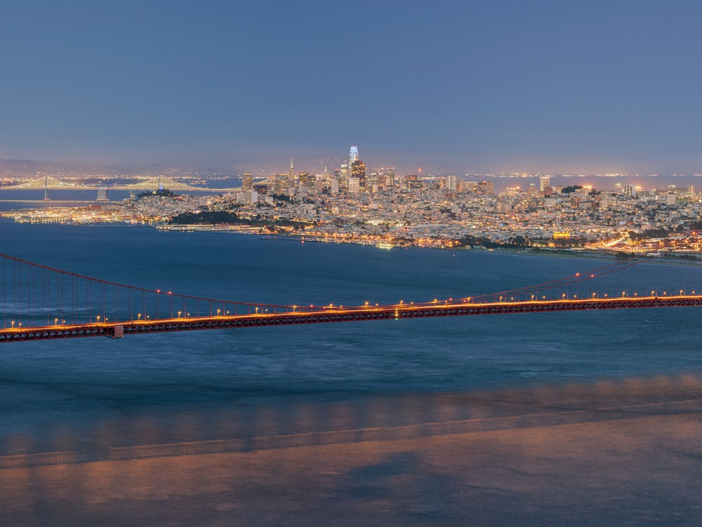
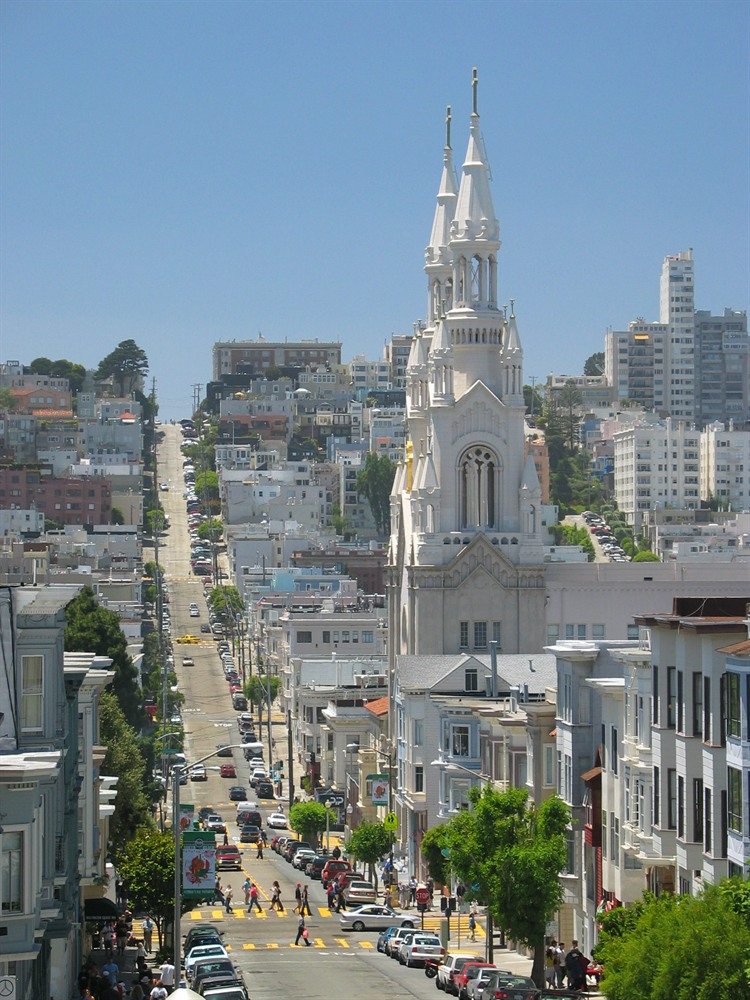

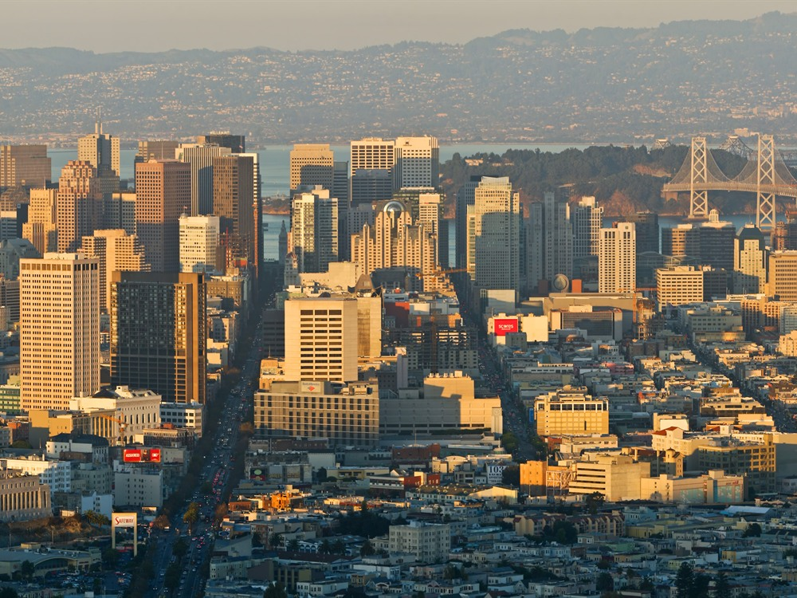

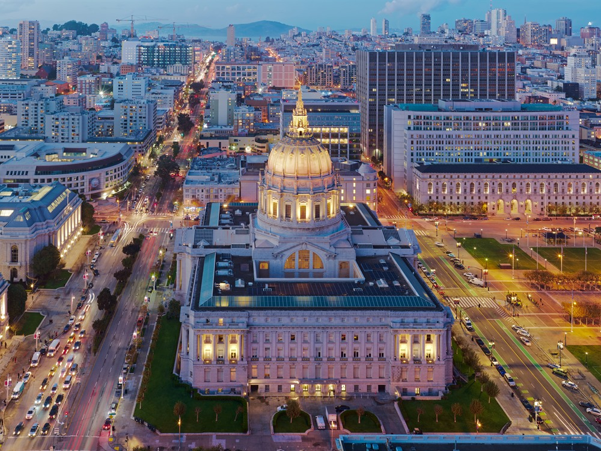
.jpg){kind=link}
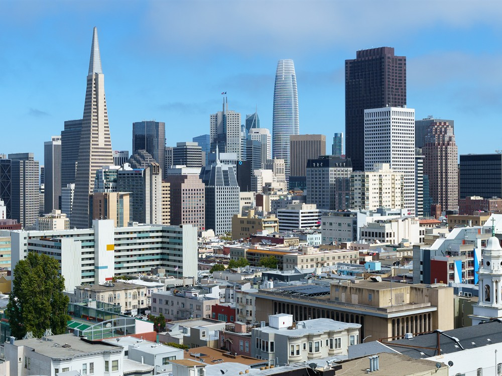